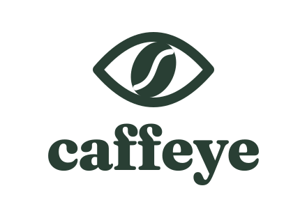
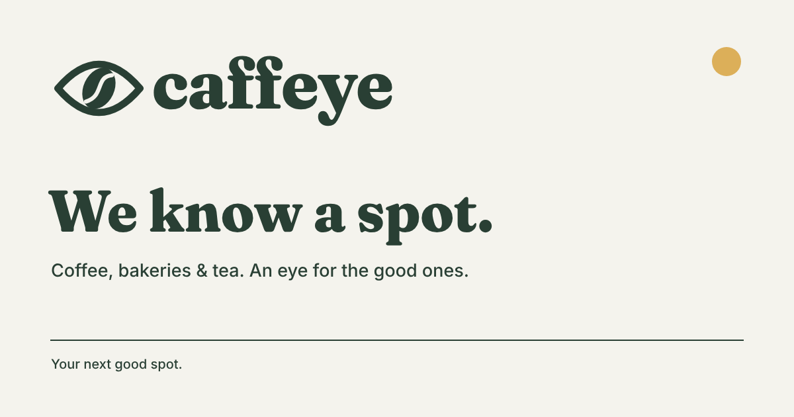

A local with an eye for good spots.
The bean eye brings Caffeye’s name and point of view together. Warm, observant and confident enough to keep things simple.

{kind=link}
One eye. Good taste.
Primary / forest on paper

Reversed / paper on forest

Stacked / compact placements

Symbol / avatars, icons and recognisable repeat use
Use the supplied outlined wordmark. Its weight, spacing and relationship to the symbol are fixed. Black and white variants are included for single-color work.
Forest first. Gold sparingly.
Forest carries the identity. Paper adds warmth. White keeps the product clear. Gold marks a small detail rather than filling every surface.
Personality up front. Clarity everywhere.
Fraunces / display
We know a spot.
Weight 800. Optical size 72, softness 50, wonk 1. Keep headlines short. The logo itself is supplied as vector outlines.
Inter / supporting copy
Coffee, bakeries & tea.
An eye for the good ones.
Weights 400, 500 and 600. Use for readable descriptions, labels and the dense map interface.
Original variable font files and licenses are bundled. Font sources: Fraunces and Inter.
Recognisable at a glance.
- Use the micro mark at 16–24 px. Its heavier eye and simpler seam survive rasterization.
- Minimum recommended width: 160 px horizontal; 120 px stacked; 32 px standard symbol.
- Keep one visible eye height of clear space around the logo. File padding alone does not provide this.
- Preserve proportions. No rotation, shadows, gradients or extra decorative elements.
- Use the transparent seam as supplied. Never fill it with a white patch.
The friend who knows a spot.
Local, concise and specific. The confidence comes from useful information. Avoid inflated claims and generic food enthusiasm.
| Say | Avoid |
|---|---|
| We know a spot. | Your ultimate café discovery platform. |
| Coffee, bakeries & tea. | Amazing hidden gems for every coffee lover! |
| Room for a laptop. When verified. | Perfect for productivity. |
Brand line: We know a spot.
Supporting line: An eye for good spots.
In prose: Caffeye. In the logo: caffeye.
Ready to share.

1200 × 630 sharing image, 1080 × 1080 avatars, 1024 × 1024 app masters, home-screen icons and adaptive favicons are included.
See the asset index, web integration notes and rebuild instructions →